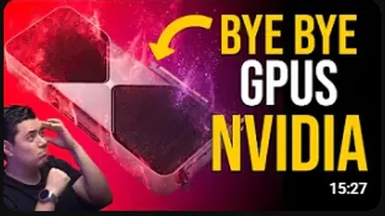
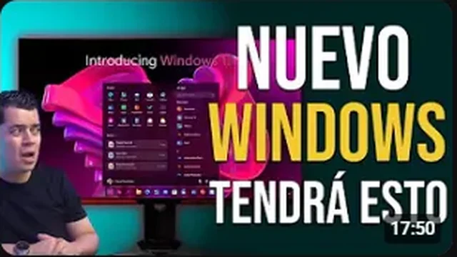
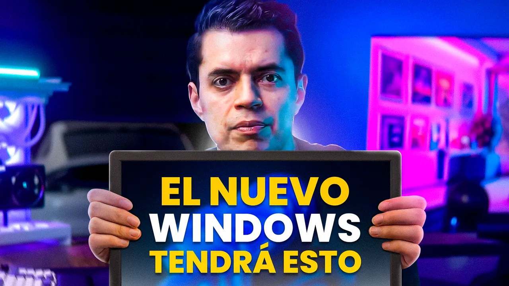
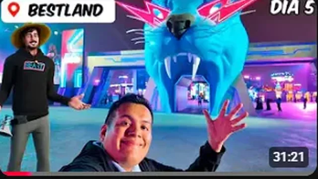
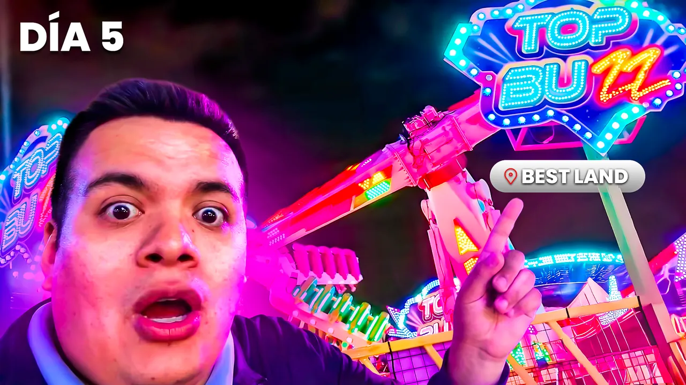
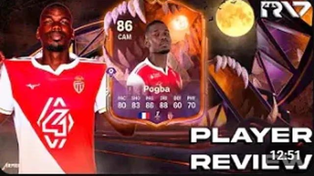

Matchday1080 × 1920
Diseño
deportivo
Anuncios de partido y piezas de jugador. Fotomanipulación y retoque digital de atletas, siempre dentro de los manuales de marca de cada institución.
Guillermo Valentín Torra Zalazar. Estudiante avanzado de Diseño Gráfico (FAPyD, UNR) con foco en la industria gráfica deportiva. Hoy, pasante en Club Atlético Newell's Old Boys.
Scroll
Enfoque
Aplico los fundamentos del diseño clásico, tipografía, color y composición al dinamismo visual que exige la comunicación deportiva moderna, para clubes, atletas y creadores de contenido.
Servicios
Del póster vertical para el día de partido a la miniatura que decide si alguien hace clic. Mismo criterio, distinto formato.
Anuncios de partido y piezas de jugador. Fotomanipulación y retoque digital de atletas, siempre dentro de los manuales de marca de cada institución.
Sistemas gráficos para redes sociales: una línea visual reconocible que el club, la marca o el atleta sostiene fecha a fecha.
Miniaturas pensadas para el CTR: una jerarquía visual clara para que el espectador entienda el video en menos de un segundo y haga clic.
Trabajo para agencia · 12 piezas
Arrastrá o scrolleá →
Sistemas matchday para dos jugadores representados por la agencia: una serie por atleta, con identidad propia en cada fecha.
6 piezas · MLS
6 piezas · Banfield
Proyectos personales · 12 piezas
Clubes y selecciones como excusa para explorar: cada pieza prueba una dirección de arte distinta, del collage tipográfico al retrato en color plano.
Miniaturas · YouTube
Una miniatura básica intenta mostrarlo todo: personaje, fondo, objeto, logo y mucho texto. Yo decido qué se ve primero, qué segundo y qué tercero, para guiar la mirada y forzar la lectura en menos de un segundo.
Click-Through Rate, o tasa de clics: el porcentaje de personas que ven tu miniatura y deciden hacer clic para ver el video. Mi objetivo es llevar tus videos del promedio a la zona viral con diseño estratégico.
La miniatura original del canal contra mi rediseño. Arrastrá el control para comparar.

AntesDespués

AntesDespués

AntesDespués
AntesDespuésSobre mí
Soy Guillermo, estudiante avanzado de Diseño Gráfico con un enfoque específico y experiencia técnica en la industria gráfica deportiva.
Me interesa la creatividad, el diseño digital y la comunicación visual. Trabajo de forma comprometida y organizada, y siempre con ganas de nuevos desafíos.
Pasantía
Facultad de Arquitectura, Planeamiento y Diseño, UNR (FAPyD)
Coderhouse
Escuela de Nivel Inicial, Primario y Secundario Técnico “Jesús de Nazaret”
Español nativo · Inglés básico
Remota e híbrida
Rosario, Santa Fe
Contacto · ¿Arrancamos el próximo proyecto?